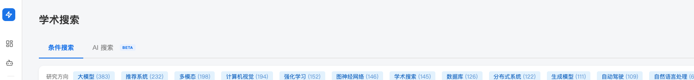
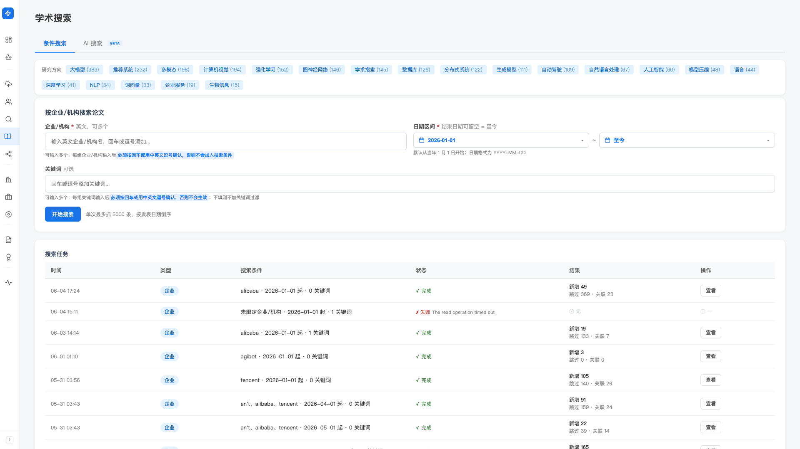
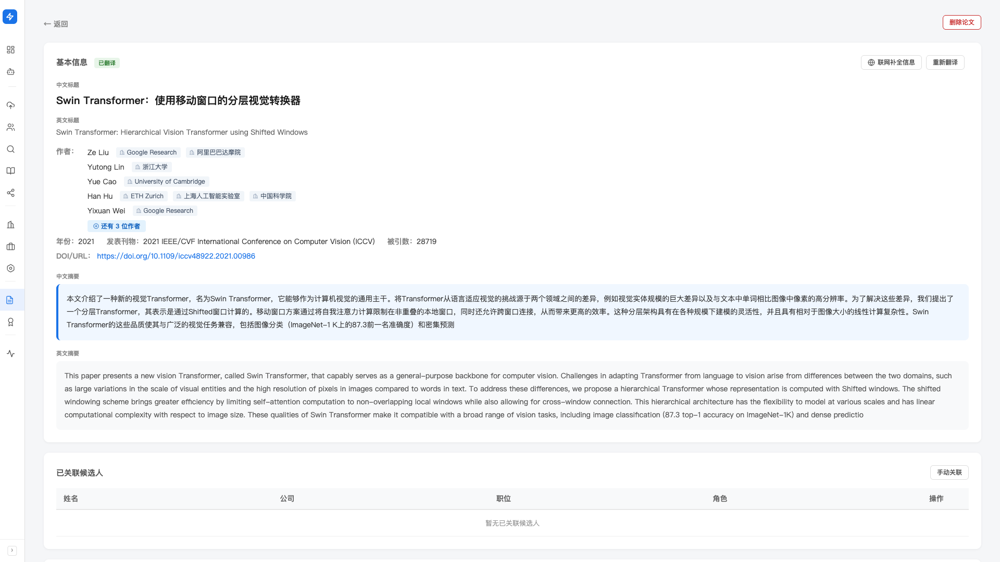

学术 & 专利
AI / 算法 / 研发岗的候选人，论文和专利就是简历之外的硬核证据。 Hunter 接入全球学术库（OpenAlex），支持国知局专利 Excel 导入， 论文 / 专利双向自动关联到候选人，做岗位匹配时还会作为额外的判断维度。
产品里对应左侧「寻访（找人）」分组下的「学术搜索」， 以及「学术资产（关联信息）」分组下的「论文管理」和「专利管理」。
本篇讲的是论文 / 专利的检索与关联基础——你自己指定机构和时间，把研究产出捞进库、关联到候选人。 如果你想要的是「给一个研究方向，让 Hunter 自主去搜相关学者、拉回论文并关联候选人」， 那属于「学术搜索」页里的另一种模式——请看 「学术搜索」文档。
三个相关页面，各管一件事
- 学术搜索：按企业/机构和日期搜论文（数据来自全球学术库 OpenAlex），把候选人对标公司的研究产出捞回来
- 论文管理：库里所有论文的统一视图——搜索、上传 PDF/DOCX、翻译未译标题
- 专利管理：从国知局下载的专利 Excel 导入，统一管理
三个页面是同一池数据的不同入口：在哪上传都进同一个论文 / 专利库，关联候选人时也共用。
学术搜索：按机构和时间捞论文
日常场景：客户想找「某个对标公司近一年发了哪些大模型论文」的人。 过去你要手动翻 OpenReview / arxiv / 论文数据库，现在 Hunter 直接在学术搜索页一次搞定。
进入「学术搜索」页后，顶部有两个标签页：
- 条件搜索（默认）——本篇讲的就是它。你自己填机构、日期、关键词，Hunter 按条件去全球学术库（OpenAlex）捞论文。
- AI 搜索 BETA——你用一句话描述想找哪家公司 / 机构 / 方向的论文，Hunter 自动生成并检查搜索条件、多源检索、去重分级，再让你确认导入。这一块是「学术搜索 / 学术搜索 Agent」，见 「学术搜索」文档。

- 左侧「寻访（找人）」分组进入「学术搜索」，停在「条件搜索」标签页
-
填「企业/机构」（必填，英文，可多个 = OR 命中）
在「企业/机构」输入框里输入英文企业/机构名（如
ByteDance、Tsinghua University）， 每输入一个要按回车、或用逗号确认，它才会变成一个标签加入搜索条件。可以加多个，命中其一即可。 -
选「日期区间」（必填）
按日期选（格式 YYYY-MM-DD），默认从当年 1 月 1 日开始。 开始日期有「今年 1 月 1 日 / 今天」快捷按钮；结束日期可点「清空（至今）」表示截止到今天。
-
（可选）填关键词
想进一步缩小范围，可在「关键词」框加词，同样要回车或逗号确认；不填则不加关键词过滤。
-
点「开始搜索」
搜索在后台跑，抓到的论文直接入库。 单次最多抓 5000 条，按发表日期倒序，覆盖绝大多数实际场景。
-
在「搜索任务」表看结果
表单下方的「搜索任务」表按时间、类型、搜索条件、状态、结果列出每次搜索， 结果里会显示抓到的数量。任务完成后点该行的「查看结果」，就能在下方看到这一批抓回来的论文，也可直接进「论文管理」页浏览全部。

研究方向聚合
「条件搜索」标签页顶部有研究方向 tag 列表（Top 20 方向 + 各自的论文数）。 点某个方向的 tag，进入该方向的论文列表；在方向页右上角点「全部方向 →」可以看完整的方向清单。
研究方向是 Hunter 从论文标题 / 摘要自动聚类出来的， 随着你库里论文增加会自动更新—— 不用你手动维护。
论文管理：库内所有论文的视图
论文管理页有两个标签页：论文列表 / 导入论文。
论文列表标签页
-
搜索框：提示文字「
搜索论文标题、作者姓名或作者机构」—— 中英文标题都能搜 - 「翻译全部未译」按钮：库里所有中文标题或中文摘要为空的论文，一次性翻译。 点击弹出弹窗显示「N 篇论文待翻译」+ 确认
- 论文卡片：标题（中英文）、作者（超过 3 位显示「等」）、年份、发表刊物、被引数、关联候选人数
- 分页
导入论文标签页
上传论文 PDF / DOCX 文件——Hunter 自动提取标题、作者、摘要、机构等。 可同时选多个文件。
- 状态筛选：全部 / 进行中 / 已完成 / 失败
- 切到「失败」筛选、且失败数 ≥ 2 时，上方出现「全部重试」按钮
论文详情页
点开任意一篇论文卡片，进入论文详情页，可以：
- 看完整字段：中英文标题、作者、年份、发表刊物、被引数、DOI/URL、中英文摘要
- 单篇翻译 / 重新翻译：只翻译当前这一篇（未译时显示「翻译」，已译显示「重新翻译」）
- 「联网补全信息」：这一篇字段不全（缺摘要、发表刊物等）时，点一下让 Hunter 联网回补结构化信息
- 作者关联：命中候选人的作者标蓝可点，下方还能手动增删候选人关联、编辑研究方向标签（详见下文「双向关联」）

OpenAlex 返回的论文标题大多是英文；你给国内客户汇报时需要中文标题—— 「翻译全部未译」一次性把库里所有未译的中文标题/摘要补上，下次就能直接给客户中文版本。
专利管理：导入国知局 Excel
专利管理页有两个标签页：专利列表 / 导入专利。
专利列表标签页
-
搜索框：placeholder「
搜索标题、专利号、发明人」 - 专利卡片：标题、权利人、发明人、申请日、摘要、关联候选人数（候选人学术页里查看时才额外显示专利号）
- 分页
点开专利卡片进入专利详情页，能看到更完整的字段：专利号、发明人（命中候选人的标蓝可点）、权利人、申请日、授权日、类型、摘要，以及候选人关联和研究方向标签。
导入专利标签页
-
从国知局下载专利 Excel
国知局（国家知识产权局）官网的专利检索系统支持按检索条件导出 Excel。 导出 13 列标准格式（申请号、发明人、摘要等）。
-
在「导入专利」标签页上传 .xlsx
支持多文件同时上传。Hunter 自动解析每行专利信息入库。
-
等待解析完成
处理记录表格显示每个文件的状态。已知问题：如果专利申请号缺失，Hunter 会用 hash id 替代（避免入库失败）。
候选人与论文/专利的双向关联
这是这套能力的核心价值——不是「拥有一堆论文」，而是「论文知道是谁写的，候选人知道发过什么」。
自动关联
每次有新论文或新专利入库，Hunter 会用作者/发明人姓名去候选人库匹配：
- 命中候选人 → 自动关联
- 姓名常见、不确定是哪个候选人 → 进入待确认，由你在候选人详情页或论文/专利详情页确认或拒绝
- 库里没找到 → 论文 / 专利保留在库里，未来如果这个作者作为候选人入库，会自动回填关联
在论文/专利详情页，命中候选人的作者姓名会标蓝， 点击直接跳到那位候选人的详情页。
从候选人视角看 ta 的论文专利
进入任意候选人详情页，下方有几个和学术成果相关的独立 section：
- 相关论文（最多预览 5 篇，点「查看全部」打开候选人学术成果页的论文标签页）
- 相关专利（同样 5 项预览，点「查看全部」打开专利标签页）
- 学术合作者：从关联论文/专利里聚合出的同作者/同发明人
- 待确认学术关联：姓名匹配上、但还没人工确认的论文/专利，可在这里确认或拒绝
点「查看全部」进入这位候选人的学术成果页：顶部是研究方向概况（涉及几个方向、哪些领域）， 下方两个标签页 论文（N） / 专利（N） 显示全部成果； 右上角还有「搜索更多成果」（带着这个人去学术搜索）和「全部翻译」。
岗位智能匹配做评分时，论文数 / 专利数 + 代表作会作为额外的评估维度—— 尤其对学术圈 / 研发岗，候选人有 3 篇顶会一作 vs. 没有，分数会有明显差异。
最佳实践
想给客户建一张「字节大模型团队」mapping？先到学术搜索： 机构选「ByteDance」，时间近 1 年，研究方向选「大模型」相关—— 搜出的论文作者列表就是这个团队的核心成员。 把这些作者拉进候选人库（或确认已在库内），再回去建 mapping，节点就有了具体的人。
「张伟」「王芳」这类常见姓名，仅凭名字会有大量同名干扰—— 如果你能在候选人详情页里手动确认 ta 的论文/专利， 后续「档案补全」「岗位匹配」都能用这层身份锚点排除同名干扰，准确度大幅提升。
常见提示
常见原因：① 时间区间太窄（如只选了 1 个月）； ② 机构名拼写不对（OpenAlex 用机构标准名，搜索时输入部分关键词尝试匹配）。 可以先放宽时间区间到 1 年，再逐步收紧。
确保是从国知局下载的标准 Excel（13 列：申请号、发明人、摘要等）。 非国知局导出的格式 Hunter 不保证兼容—— 可以打开 Excel 检查列名，必要时手动改成 13 列标准格式。
「翻译全部未译」是后台任务，翻译几百篇可能需要几分钟。 页面点完按钮弹窗关闭后任务在后台跑，几分钟后回来刷新即可看到中文标题/摘要。 进度可在论文列表里直接观察（已翻译的会更新）。